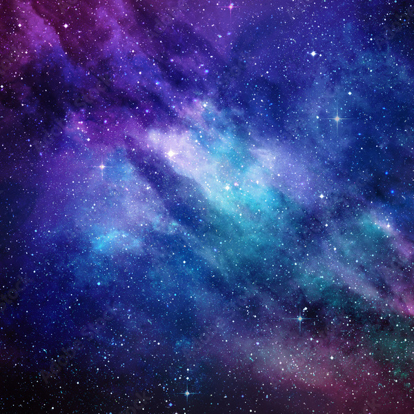
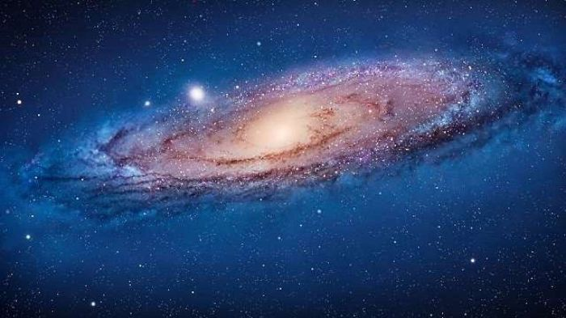
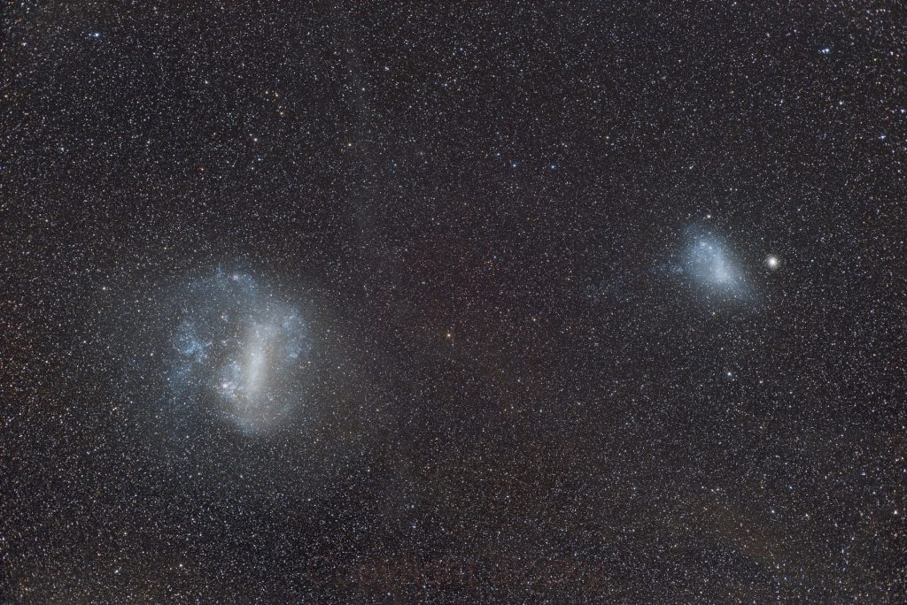

Galaksi adalah sebuah sistem masif yang terikat oleh gaya gravitasi, terdiri dari bintang, gas, debu, dan materi gelap. Bayangkan saja, galaksi seperti sebuah kota raksasa di alam semesta, di mana bintang-bintang adalah rumah-rumahnya, gas dan debu adalah jalan-jalannya, dan materi gelap adalah semacam "kerangka" yang menyatukan semuanya.
Bima Sakti adalah galaksi tempat kita tinggal. Jika kamu melihat ke langit malam yang cerah dan jauh dari polusi cahaya, kamu mungkin akan melihat sebuah pita cahaya samar-samar membentang melintasi langit. Itulah sebagian dari Bima Sakti yang dapat kita lihat dengan mata telanjang.

Galaksi Bima Sakti

Galaksi Bima Sakti adalah rumah kita. Galaksi spiral ini memiliki bentuk seperti cakram pipih dengan tonjolan di pusatnya. Diperkirakan mengandung sekitar 200-400 miliar bintang, termasuk Matahari kita. Bima Sakti juga memiliki lubang hitam supermasif di pusatnya.
Galaksi Andromeda
Andromeda adalah galaksi spiral terbesar yang paling dekat dengan Bima Sakti. Terletak sekitar 2,5 juta tahun cahaya dari kita, Andromeda terlihat sebagai sebuah titik kabur di langit malam. Andromeda sedang bergerak menuju Bima Sakti dan diperkirakan akan bertabrakan dengan galaksi kita dalam beberapa miliar tahun lagi.
Galaksi Magellan Besar dan Kecil

Kedua galaksi ini adalah satelit dari Bima Sakti dan terlihat jelas dari belahan bumi selatan. Mereka adalah galaksi tidak beraturan yang kaya akan gas dan debu, sehingga proses pembentukan bintang sangat aktif di dalamnya.